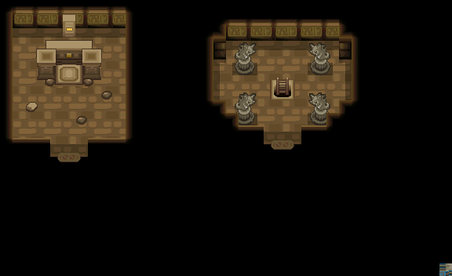
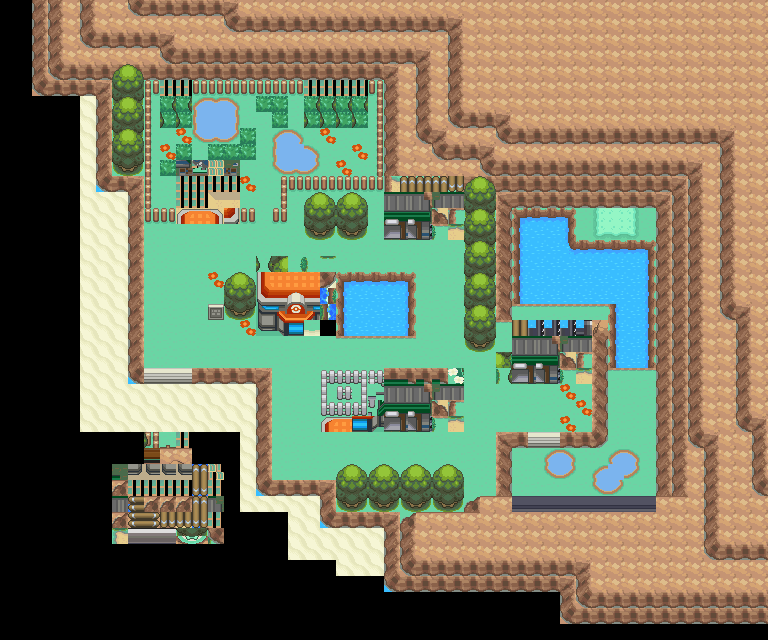
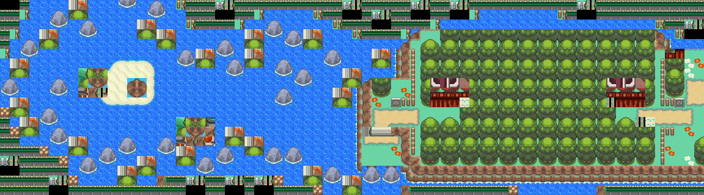
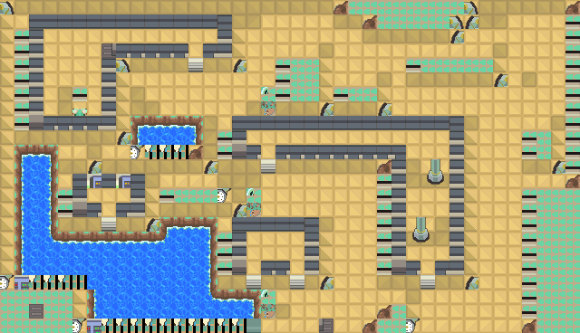

高级球
比超级球更容易收服宝可梦， 性能很好的球。
获取：训练师之塔·商店 ／ 吉野市·商店 ／ 浅红市·商店 ／ 红莲岛·商店 ／ 烟墨市·商店 ／ 石英高原·商店 ／ 桔梗市·商店 ／ 桧皮镇·商店 ／ …等 41 处
用途
比超级球更容易收服宝可梦， 性能很好的球。
标价 800 口袋：精灵球
获取方式
购买
- 训练师之塔（区域179） · 标价 800 · 地图｜静态图 · 触发条件待补
- 吉野市（区域144） · 标价 800 · 地图｜静态图 · 触发条件待补
- 吉野市（区域144） · 标价 800 · 地图｜静态图 · 触发条件待补
- 吉野市（区域144） · 标价 800 · 地图｜静态图 · 触发条件待补
- 浅红市（区域95） · 标价 800 · 地图｜静态图 · 触发条件待补
- 红莲岛（区域96） · 标价 800 · 地图｜静态图 · 触发条件待补
- 烟墨市（区域152） · 标价 800 · 地图｜静态图 · 触发条件待补
- 石英高原（区域97） · 标价 800 · 地图｜静态图 · 触发条件待补
- 吉野市（区域144） · 标价 800 · 地图｜静态图 · 触发条件待补
- 桔梗市（区域145） · 标价 800 · 地图｜静态图 · 触发条件待补
- 桧皮镇（区域146） · 标价 800 · 地图｜静态图 · 触发条件待补
- 缘朱市（区域148） · 标价 800 · 地图｜静态图 · 触发条件待补
- 浅葱市（区域149） · 标价 800 · 地图｜静态图 · 触发条件待补
- 烟墨市（区域152） · 标价 800 · 地图｜静态图 · 触发条件待补
- 石英高原（区域97） · 标价 800 · 地图｜静态图 · 触发条件待补
- 吉野市（区域144） · 标价 800 · 地图｜静态图 · 触发条件待补
- 桔梗市（区域145） · 标价 800 · 地图｜静态图 · 触发条件待补
- 桧皮镇（区域146） · 标价 800 · 地图｜静态图 · 触发条件待补
- 缘朱市（区域148） · 标价 800 · 地图｜静态图 · 触发条件待补
- 浅葱市（区域149） · 标价 800 · 地图｜静态图 · 触发条件待补
- 烟墨市（区域152） · 标价 800 · 地图｜静态图 · 触发条件待补
- 石英高原（区域97） · 标价 800 · 地图｜静态图 · 触发条件待补
- 吉野市（区域144） · 标价 800 · 地图｜静态图 · 触发条件待补
- 桔梗市（区域145） · 标价 800 · 地图｜静态图 · 触发条件待补
- 桧皮镇（区域146） · 标价 800 · 地图｜静态图 · 触发条件待补
- 缘朱市（区域148） · 标价 800 · 地图｜静态图 · 触发条件待补
- 浅葱市（区域149） · 标价 800 · 地图｜静态图 · 触发条件待补
- 烟墨市（区域152） · 标价 800 · 地图｜静态图 · 触发条件待补
- 石英高原（区域97） · 标价 800 · 地图｜静态图 · 触发条件待补
- 吉野市（区域144） · 标价 800 · 地图｜静态图 · 触发条件待补
- 桔梗市（区域145） · 标价 800 · 地图｜静态图 · 触发条件待补
- 桧皮镇（区域146） · 标价 800 · 地图｜静态图 · 触发条件待补
- 缘朱市（区域148） · 标价 800 · 地图｜静态图 · 触发条件待补
- 浅葱市（区域149） · 标价 800 · 地图｜静态图 · 触发条件待补
- 桧皮镇（区域146） · 标价 800 · 地图｜静态图 · 触发条件待补
- 城都矿山（区域214） · 标价 800 · 地图｜静态图 · 触发条件待补
- 满金市（区域147） · 标价 800 · 地图｜静态图 · 触发条件待补
- 满金市（区域147） · 标价 800 · 地图｜静态图 · 触发条件待补
- 满金市（区域147） · 标价 800 · 地图｜静态图 · 触发条件待补
- 满金市（区域147） · 标价 800 · 地图｜静态图 · 触发条件待补
地面隐藏
- 阿露福遗迹（区域134） · (12,20) · 数量 1 · 地图｜静态图
- 华蓝洞（区域141） · (12,2) · 数量 1 · 地图｜静态图
- 桧皮镇（区域146） · (6,21) · 数量 1 · 地图｜静态图
- 34号道路（区域159） · (1,3) · 数量 1 · 地图｜静态图
- 34号道路（区域159） · (1,3) · 数量 1 · 地图｜静态图
- 39号道路（区域164） · (12,9) · 数量 1 · 地图｜静态图
- 连接洞（区域180） · (17,58) · 数量 1 · 地图｜静态图
- 连接洞（区域180） · (12,32) · 数量 1 · 地图｜静态图
- 烧焦塔（区域183） · (3,17) · 数量 1 · 地图｜静态图
- 光辉灯塔（区域186） · (15,19) · 数量 1 · 地图｜静态图
- 城都矿山（区域214） · (30,10) · 数量 1 · 地图｜静态图
- 擂钵山（区域99） · (46,17) · 数量 1 · 地图｜静态图
- 擂钵山（区域99） · (16,52) · 数量 1 · 地图｜静态图
- 火箭队基地（区域133） · (11,21) · 数量 1 · 地图｜静态图
人物剧情
- 阿露福遗迹（区域134） · (1,17) · 与坐标处人物交互 · 数量 1 · 地图｜静态图 · 触发条件待补
- 华蓝洞（区域141） · (29,16) · 与坐标处人物交互 · 数量 1 · 地图｜静态图 · 触发条件待补
- 华蓝洞（区域141） · (31,9) · 与坐标处人物交互 · 数量 1 · 地图｜静态图 · 触发条件待补
- 双子岛（区域139） · (22,19) · 与坐标处人物交互 · 数量 1 · 地图｜静态图 · 触发条件待补
- 寂静之丘（区域212） · (52,45) · 与坐标处人物交互 · 数量 1 · 地图｜静态图 · 触发条件待补
- 擂钵山（区域99） · (0,0) · 与坐标处人物交互 · 数量 1 · 地图｜静态图 · 触发条件待补
- 满金市（区域147） · (6,7) · 与坐标处人物交互 · 数量 1 · 地图｜静态图 · 触发条件待补
- 铃铛塔（区域135） · (20,12) · 与坐标处人物交互 · 数量 1 · 地图｜静态图 · 触发条件待补
- 42号道路（区域167） · (15,12) · 与坐标处人物交互 · 数量 1 · 地图｜静态图 · 触发条件待补
- 满金市（区域147） · (10,14) · 与坐标处人物交互 · 数量 1 · 地图｜静态图 · 触发条件待补
- 44号道路（区域169） · (65,8) · 与坐标处人物交互 · 数量 1 · 地图｜静态图 · 触发条件待补
- 擂钵山（区域99） · (20,35) · 与坐标处人物交互 · 数量 1 · 地图｜静态图 · 触发条件待补
- 不知名遗迹（区域209） · (36,21) · 与坐标处人物交互 · 数量 1 · 地图｜静态图 · 触发条件待补
- 寂静之丘（区域212） · (11,22) · 与坐标处人物交互 · 数量 1 · 地图｜静态图 · 触发条件待补
- 漩涡岛（区域176） · (22,17) · 与坐标处人物交互 · 数量 1 · 地图｜静态图 · 触发条件待补
- 漩涡岛（区域176） · (51,14) · 与坐标处人物交互 · 数量 1 · 地图｜静态图 · 触发条件待补
数据来源
- 来源文档：out/items.json（
/2） - 表索引 index 0002；内嵌 itemId 2；口袋 POKE_BALLS (id=3)；type 1；hold_effect 0/0；importance 0；unk19 0
- 获取来源文档：encounters_research/out/shops.json、maps_research/out/events/events.json、maps_research/out/scripts/scripts.json
- 获取记录 ID：
shop:081649A8:0:2:10、shop:081676EC:0:3:13、shop:08167708:0:3:13、shop:08167728:0:3:13、shop:0816D509:0:11:1、shop:0816EA38:0:12:7、shop:089C7965:2:31:2、shop:089C7965:2:34:3、shop:089C7965:2:45:1、shop:089C7965:2:46:3、shop:089C7965:2:47:4、shop:089C7965:2:48:7、shop:089C7965:2:49:11、shop:089C7970:2:31:2、shop:089C7970:2:34:3、shop:089C7970:2:45:1、shop:089C7970:2:46:3、shop:089C7970:2:47:4、shop:089C7970:2:48:7、shop:089C7970:2:49:11、shop:089C797B:2:31:2、shop:089C797B:2:34:3、shop:089C797B:2:45:1、shop:089C797B:2:46:3、shop:089C797B:2:47:4、shop:089C797B:2:48:7、shop:089C797B:2:49:11、shop:089C7986:2:31:2、shop:089C7986:2:34:3、shop:089C7986:2:45:1、shop:089C7986:2:46:3、shop:089C7986:2:47:4、shop:089C7986:2:48:7、shop:089C7986:2:49:11、shop:08171CC4:0:35:7、shop:08171E7C:0:37:4、shop:089EB937:2:50:16、shop:089EB942:2:50:16、shop:089EB94D:2:50:16、shop:089EB958:2:50:16、hidden:1:48:8、hidden:1:72:0、hidden:3:15:2、hidden:3:46:4、hidden:3:46:5、hidden:3:59:2、hidden:3:86:3、hidden:3:107:0、hidden:48:3:1、hidden:49:13:8、hidden:51:9:0、hidden:55:9:2、hidden:55:11:0、hidden:56:45:8、script_item_candidate:std:081BE90C:1:56、script_item_candidate:std:081BEA85:1:73、script_item_candidate:std:081BEA9F:1:74、script_item_candidate:std:081BEC25:1:87、script_item_candidate:std:081BED36:1:97、script_item_candidate:std:081BED5D:1:111、script_item_candidate:std:087BC9C2:56:78、script_item_candidate:std:087BD378:55:20、script_item_candidate:std:089F4106:3:97、script_item_candidate:std:08AA2FBD:50:23、script_item_candidate:std:08AABFC5:3:98、script_item_candidate:std:08D537E2:55:9、script_item_candidate:std:08EC1914:56:17、script_item_candidate:std:08EC4DC3:1:98、script_item_candidate:std:09CD080F:55:14、script_item_candidate:std:09CD081C:55:14 - 说明文字解码来源：
reference/SAVE_HOME_GAME_DATA.json.charmap
地点地图
共享RGB底图；点击可缩放定位。数字对应本页相关地点，不代表地图上全部事件。


展开其余 35 张地点地图
吉野市

1 高级球（1,5）
桔梗市

1 高级球（1,5）
桧皮镇

1 高级球（1,5）
缘朱市

1 高级球（1,5）
浅葱市

1 高级球（1,5）
桧皮镇

1 高级球（2,3）
城都矿山
1 高级球（10,5）
满金市

1 高级球（22,6）
阿露福遗迹

1 高级球（12,20）
华蓝洞

1 高级球（12,2）
桧皮镇

1 高级球（6,21）
34号道路

1 高级球（1,3）
39号道路

1 高级球（12,9）
连接洞

1 高级球（17,58）
连接洞

1 高级球（12,32）
烧焦塔

1 高级球（3,17） 底图有7个图块缺少原始数据。
光辉灯塔

1 高级球（15,19）
城都矿山

1 高级球（30,10）
擂钵山

1 高级球（20,35）；2 高级球（46,17）
擂钵山

1 高级球（16,52）
火箭队基地

1 高级球（11,21） 底图有8个图块缺少原始数据。
阿露福遗迹

1 高级球（1,17）
华蓝洞

1 高级球（29,16）
华蓝洞

1 高级球（31,9）
双子岛

1 高级球（22,19） 底图有11个图块缺少原始数据。
寂静之丘

1 高级球（52,45）
擂钵山

1 高级球（0,0）
满金市

1 高级球（6,7） 底图有19个图块缺少原始数据。
铃铛塔

1 高级球（20,12）
42号道路


1 高级球（15,12）
满金市

1 高级球（10,14）
44号道路

1 高级球（65,8）
不知名遗迹

1 高级球（36,21）
寂静之丘

1 高级球（11,22）
漩涡岛

1 高级球（51,14）；2 高级球（22,17）